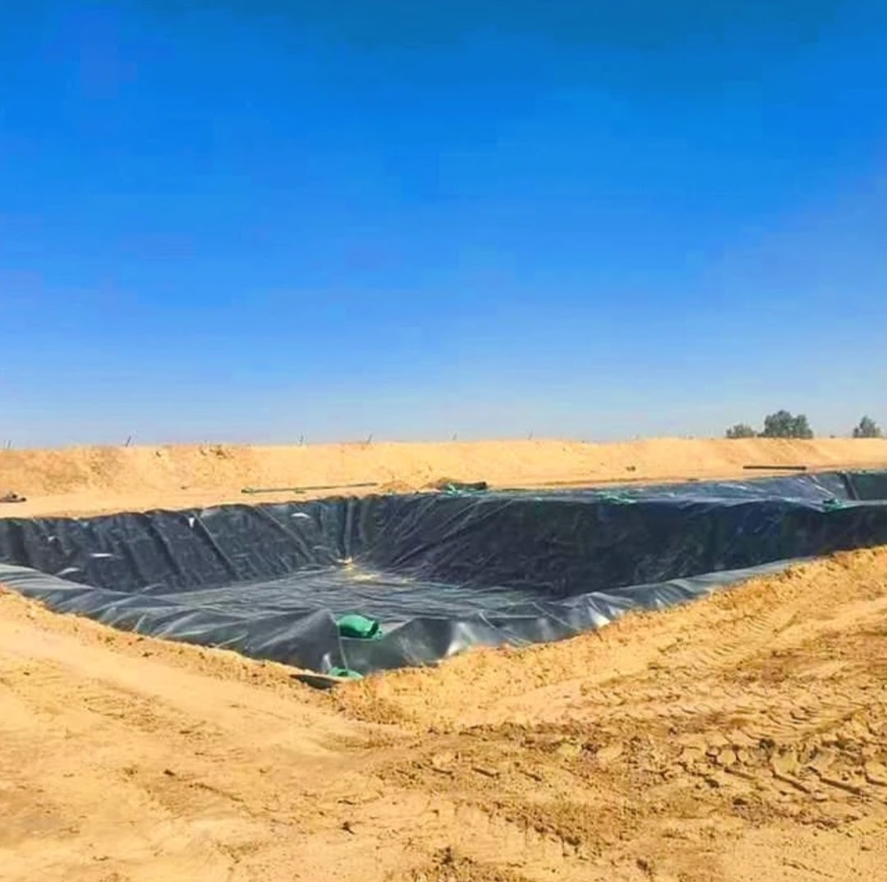
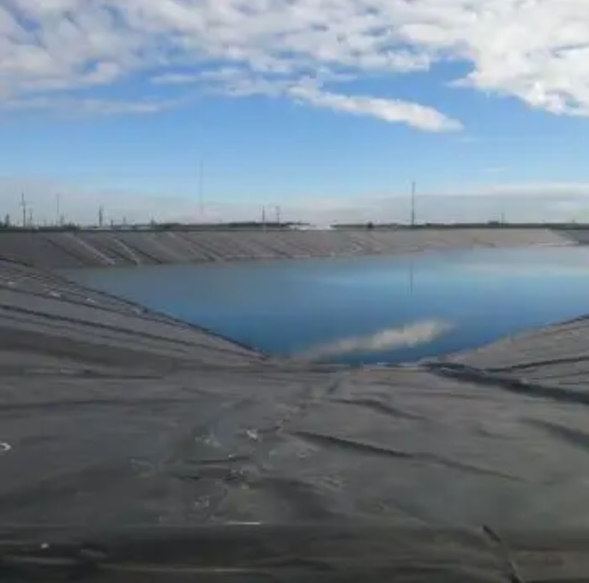
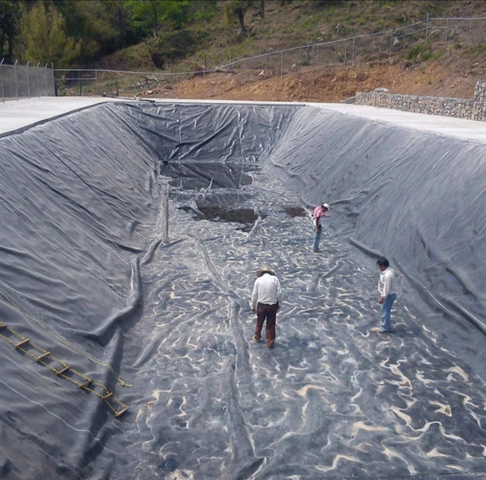
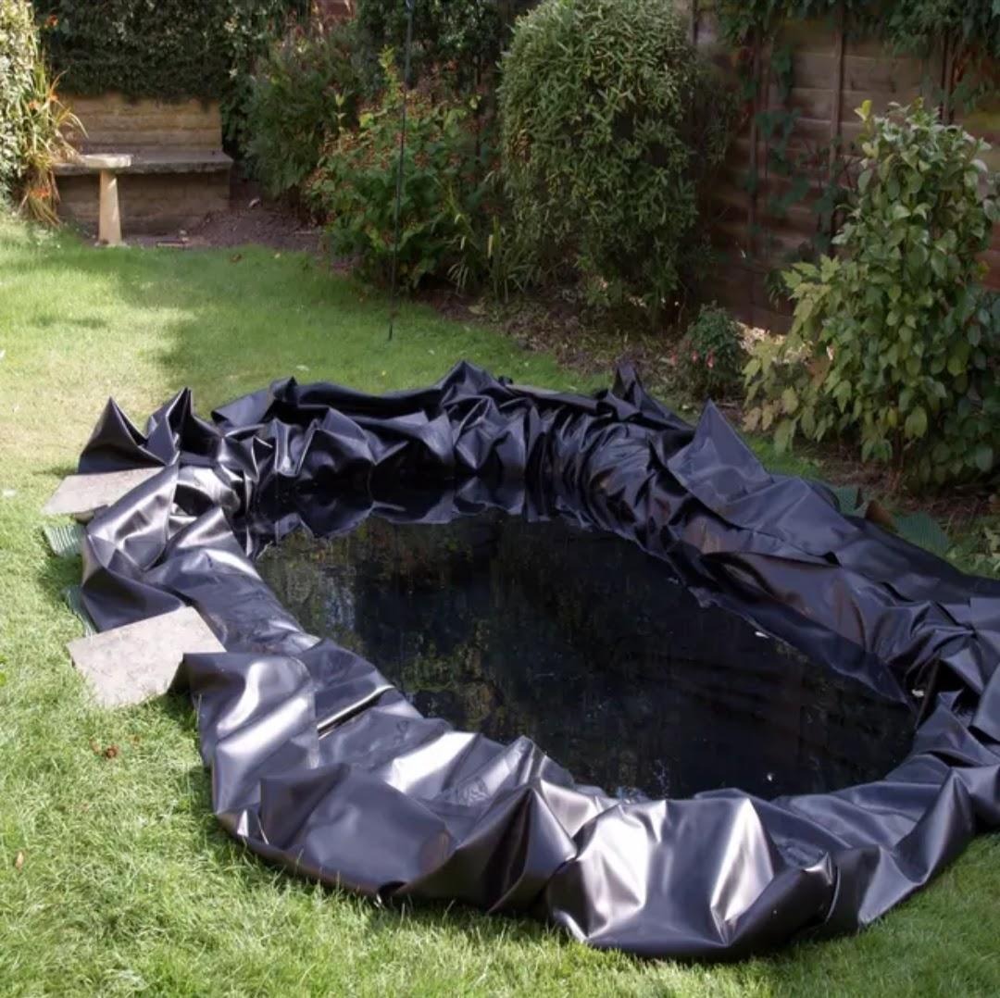
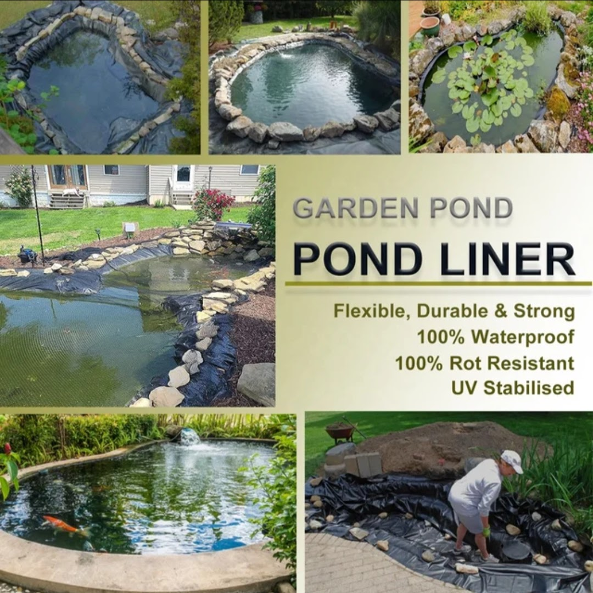
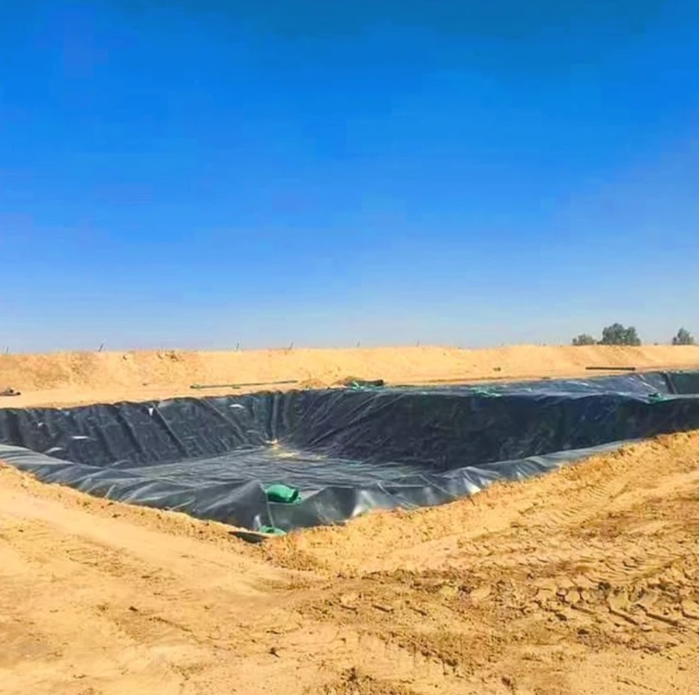
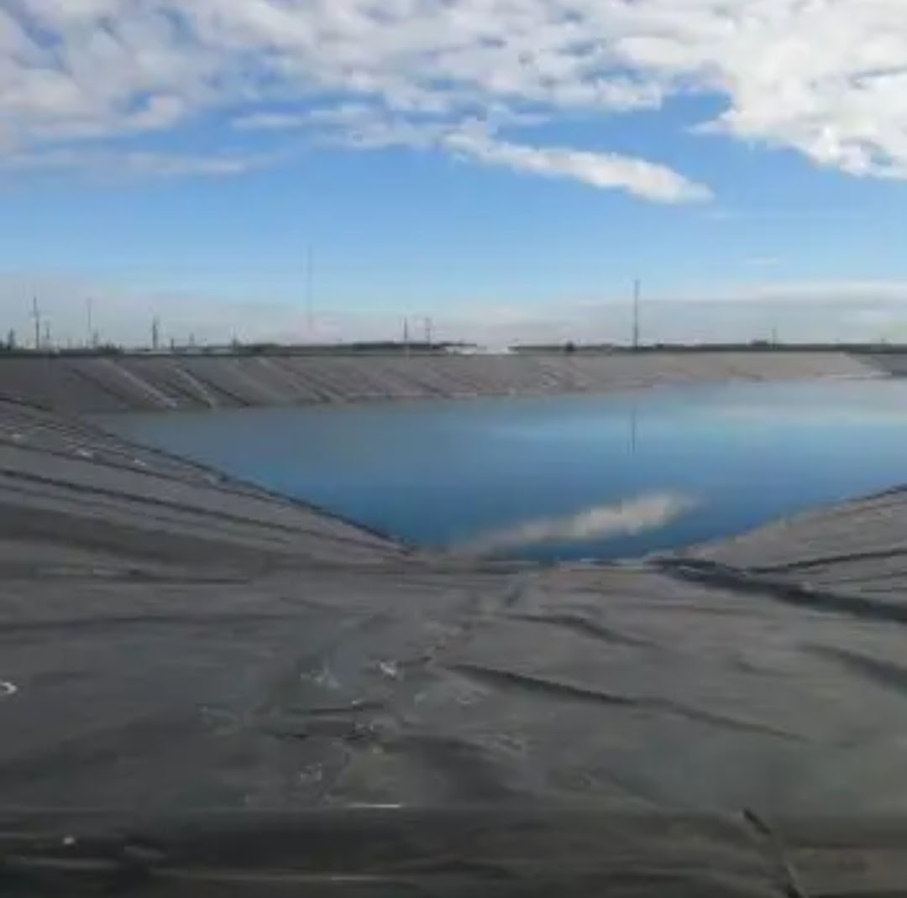
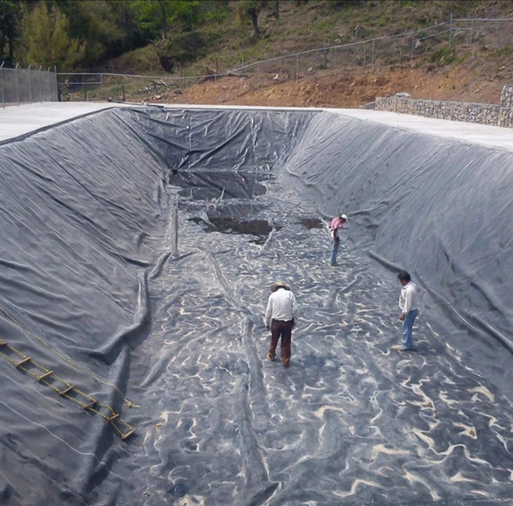
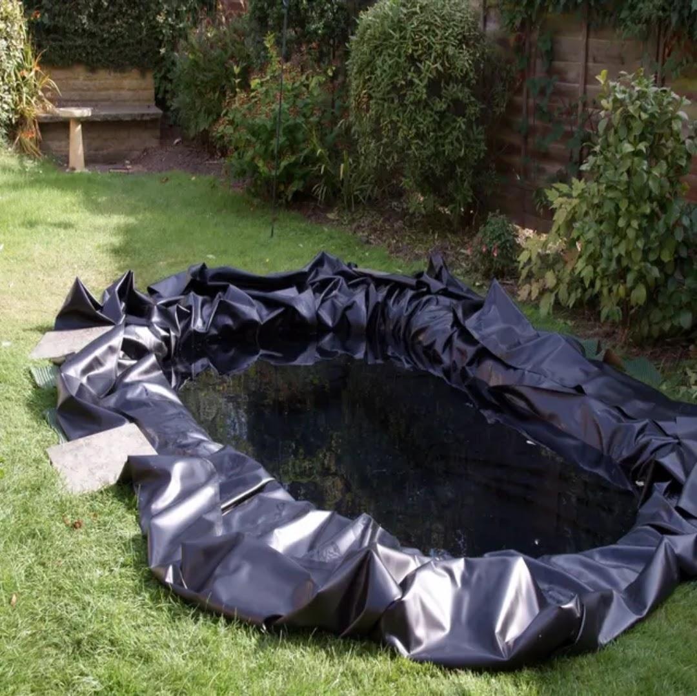
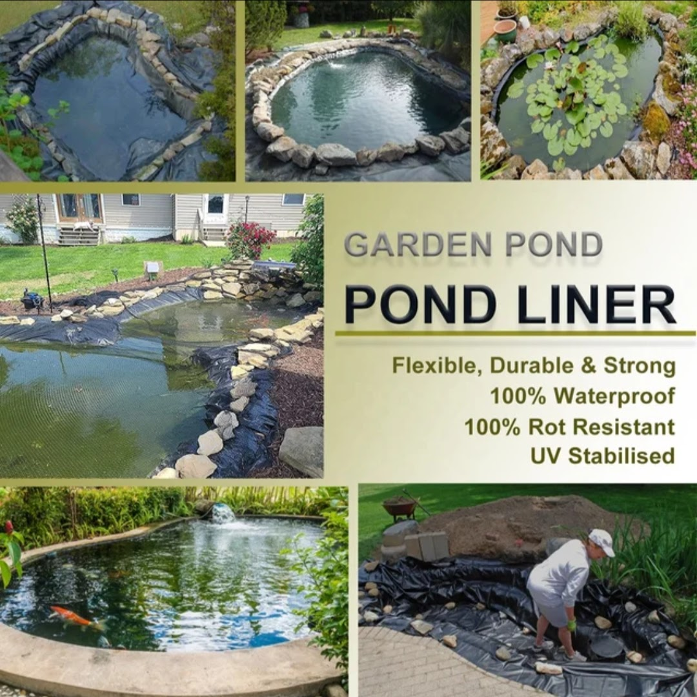

Product Overview
Geo Membrane Tarpaulins are engineered sheets used for
water containment, lining, and seepage control in
agricultural, construction, and industrial applications.
Manufactured from high-quality polymer materials, these
tarpaulins provide excellent resistance to water, chemicals,
UV exposure, and environmental stress, ensuring long-term
performance.
Key Features
- Excellent waterproofing and seepage control
- High tensile strength and durability
- UV and chemical resistant
- Flexible and easy to install
- Suitable for harsh outdoor conditions
Specifications
- Material: HDPE / LDPE / Polymer-based sheets
- Thickness: Varies as per application
- Surface: Smooth or textured
- Colour: Black / Blue (custom options available)
- Usage: Lining and containment
Applications & Use Cases
- Water ponds and reservoirs
- Agricultural lining and irrigation projects
- Construction and civil engineering works
- Landfills and waste containment
- Industrial water storage solutions
Best Suited For
- Farm ponds, fish ponds, and irrigation water storage
- Long-term water containment and seepage control projects
- Sites requiring chemical and moisture resistance
Selection Note
For Indian conditions, correct thickness selection is critical
based on pond size, soil condition, and expected load.
Proper ground preparation and edge anchoring significantly
improve service life and prevent liner damage.
Commonly Used Along With
- Protective Geotextile Fabric (underlay)
- Sand or Cushioning Layer for base preparation
- Anchoring Materials for edge fixing
Product FAQs
-
Which thickness is recommended for farm ponds in India?
Thickness selection depends on pond size, soil condition, and water depth.
Thicker liners are recommended for rocky soil and larger ponds to prevent punctures.
-
Is geo membrane tarpaulin suitable for long-term outdoor use?
Yes. These liners are UV stabilized and designed for long-term outdoor exposure
in Indian climatic conditions.
-
Does geo membrane require a protective underlayer?
Yes. Using a geotextile or sand cushion layer beneath the membrane helps
prevent punctures and increases service life.
-
Can geo membrane tarpaulin be used for chemical containment?
Certain polymer-based membranes offer chemical resistance and can be used
for industrial containment depending on chemical type.
-
How is the membrane secured at the edges?
Edges are typically anchored using trenches, weights, or mechanical fixing
to prevent movement due to wind or water pressure.
-
Are custom sizes available for large projects?
Yes. Geo membrane tarpaulins can be supplied in custom sizes and thicknesses
for agricultural, industrial, and infrastructure projects.
 








